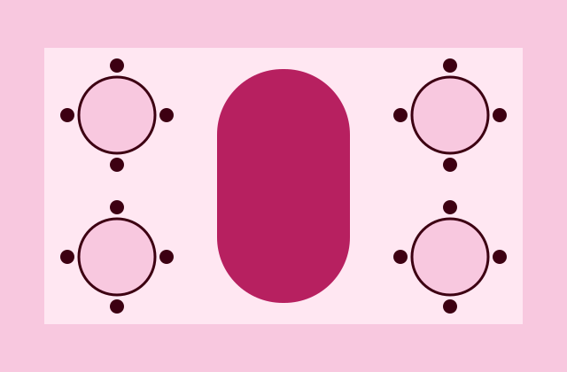
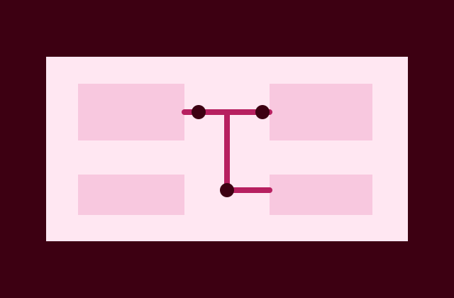

Tarih Kartelası
Gününüzü
birlikte planlayalım
Düğün ve kutlamanız için tarihi, etkinlik türünü ve yaklaşık kişi sayısını paylaşın.
Örnek organizasyon sayfasıTalep kartı oluştur
Tarih ve kapsam ilk konuşmanın başlangıcıdır. Uygunluk ve teklif birlikte netleştirilir.
Hangi günü
kuruyoruz?
Etkinliğin biçimi, ihtiyaç duyulan düzeni belirler.
- Düğün
Karşılama, tören ve kutlama için tek akış.
- Nişan

Konuk düzeni ve masa yerleşimi üzerine ilk plan.
- Özel gün

Kutlamanın yerine ve ölçeğine göre şekillenen kapsam.
Etkinlik açıklamaları örnektir; gerçek hizmet listesi işletme tarafından doğrulanmalıdır.
Önce çerçeve,
sonra ayrıntı
İlk talep kartı günü ve kişi sayısını toplar. Mekân, kurulum sırası ve hizmet kapsamı görüşmede netleşir.
- Gün ve etkinlik türü belirlenir.
- Yaklaşık katılım paylaşılır.
- İhtiyaçlar ve mekân konuşulur.
Tarih talebiniz
Alanları doldurun; tarayıcıda paylaşmaya hazır bir özet oluşsun. Bu demo uygunluk veya fiyat garantisi vermez.
Örnek talep aracı